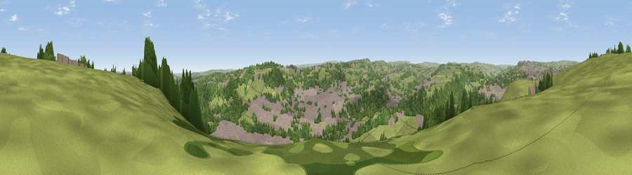

Viewpoint near Southowram
#15422 in England · top 22% of its area beats it · near SouthowramThe view, rendered

A 360° render of this exact spot computed from the terrain model, tree cover and land cover — summer colours, afternoon light, calibrated against photographs of famous viewpoints. Real trees, hedges and buildings will differ in detail.
The panorama
Grey silhouette: terrain skyline in each direction (720 bearings, Earth curvature and refraction included). Dashed green: skyline with trees (+15 m) and buildings (+8 m) as obstacles. Blue strip: how far the ground is visible on each bearing.
Where the view opens
Wedge length = distance to the farthest visible ground on that bearing (vegetation-aware). Rings at 10, 25 and 50 km.
What fills the view
53% woodland · 26% grassland · 20% built-up
Angular shares of the visible panorama (visual magnitude), not map area. Landscape diversity 0.45 (0–1 Shannon).
Key numbers
More beautiful places nearby
The staircase of upgrades: each row has a higher view potential than everything closer. Driving times are estimates from straight-line distance, calibrated against real road routing — check an actual route before setting out.
| Place | Direction | Drive | Score |
|---|---|---|---|
| Viewpoint near Southowram | NNW · 1 km | ~4 min | 60.0 |
| Bank Top | NNW · 2 km | ~5 min | 62.6 |
| Fixby Ridge | SSE · 3 km | ~7 min | 65.7 |
| Viewpoint near Stump Cross | NNW · 5 km | ~11 min | 67.8 |
| Viewpoint near Stump Cross | NNW · 6 km | ~12 min | 71.5 |
| Viewpoint near Jackson Bridge | SSE · 17 km | ~29 min | 73.5 |
| Viewpoint near Greenfield | SSW · 23 km | ~37 min | 76.0 |
| Viewpoint near Otley | NNE · 23 km | ~39 min | 77.5 |
53.69950, -1.83373 · source: screening · position refined by local search. Computed location — check access rights before visiting.